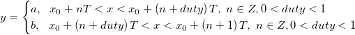
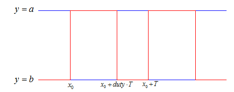

SqWaveMod-FitFunc

2つのレベル間を非定常変化する周期付き修正矩形波関数

数：5
パラメータの名前: a, b, x0, duty, T
意味: a = 高レベル, b = 低レベル, x0 = X 開始, T = 周期
下側境界: なし
上側境界: なし
nlf_SquareWaveMod(x,a,b,x0,duty,T)
FITFUNC/SquareWaveMod.FDF
波の形式